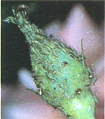
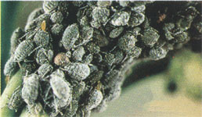
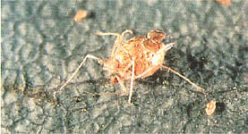

Here's the twelfth in a series of articles that will help you tell friend from foe in your garden.
In our last issue, we took a close look at the biology of the aphid. Now let's turn our attention to the types of aphids and what can be done to control them.
There would appear to be few plants that are not attacked by one species or another of aphids. The cabbage aphid ( Brevicoryne brassicae ) is gray with a white waxy coating and is found on most of the cole crops. The pea aphid ( Acyrthosiphon pisum ) is green and attacks many legumes.
Cotton aphids ( Aphis gossypii ) are found on cotton as well as on melons, beans, and beets; of variable color, they may be green, brown, or black. The floriculturists among us might eventually meet up with the rose aphid ( Macrosiphum rosae ), a green species that forms dense colonies on the buds and tender leaves of rosebushes. The list of destructive species goes on and on: bean aphid, peach aphid, apple aphid, potato aphid, woolly apple aphid, etc. Fortunately, the control of these pests differs little from one species to another.
Nature has numerous weapons with which she offsets the enormous reproductive capacity of aphids. There are, for example, many predators that feed on these prolific pests. The benefits of having ladybugs and green lacewings in your garden have been discussed in previous issues. Another important predator is the larvae of the hover fly (family Syrphidae). These can be recognized by their similarity to other maggots: They're legless, elongate and tapering, widest at the rear. Adult hover flies often bear a remarkable resemblance to yellow and black wasps.
Internal parasites also take their toll on the aphid population. The larvae of tiny braconid and chalcid wasps feed and develop within the bodies of aphids, eventually killing them. The unfortunate host takes on a ghostly appearance and becomes brittle. Such "aphid mummies" are easy to spot among their nonparasitized kin. The larva of the wasp may pupate within or outside its host, and it often leaves a small "door" at the point where it emerges from the aphid's body.
In addition to predators and parasites, various diseases and adverse environmental conditions further slow the burgeoning masses of aphids. Still, aphid colonies often build up to damaging levels, and the gardener must take action or risk damaged plants and reduced yields.
One of the best methods of control is to know where and when aphid infestations start, and simply begin hand-crushing the pests early in the season - before they have a chance to multiply to damaging levels. Close observation based on past experience will be your best guide to early outbreaks. While crushing aphids, be on the lookout for predators and parasites among the pests. If these are present in sufficient quantity, you might consider crushing only some of the aphids and leaving the rest as food for the beneficial insects. It may also be difficult to crush the pests on young tender growth without damaging the plant itself. Try using a moistened swab or toothpick to remove them before crushing.
Obviously, there are some instances where hand-crushing is simply not practical. Perhaps you have a large number of plants with aphids, or in the case of infestations on trees and tall shrubs, the pests may be out of reach. One solution is to blast them from their perches with a strong jet of water. This must be done carefully on tender plants, as damage can be inflicted on the foliage as well. Because of their weak legs, many of the aphids so dislodged will not be able to crawl back to their feeding grounds - especially if they've been parasitizing older, taller plants. Repeat such sprayings as necessary to keep the pests under control.
If these methods fail to give adequate results, a solution of 1 or 2 tablespoons of dishwashing liquid or laundry soap per gallon of water can be sprayed on the offenders. This will remove their protective waxy coating and cause many to die from desiccation. Use a fairly pure soap and rinse the plants with clear water the next day. Be sure to spray thoroughly, covering both sides of the leaves.
On trees and shrubs, getting rid of the ants that herd and protect the aphids will help the natural predators and parasites keep things under control. A sticky, greaselike product called Tanglefoot can be applied to the trunks of trees and bushes to prevent ants from climbing.
There are still other alternatives available. It is claimed that interplanting onions or garlic among other crops will repel aphids. Countless formulas based on garlic or red-hot peppers have been devised as all-purpose insect sprays. One such formulation is made by combining a bulb of garlic, a couple of onions, and several ground cayenne peppers.
Mash these ingredients and let them stand covered with water for 24 hours - then dilute the mixture to make one gallon. Strain this and spray it on your plants as necessary, up to several times daily. Few such home remedies, including the soap spray described above, have been tested for safety, so I recommend using them with a bit of caution and only when other methods fail.
Yet another alternative consists of dusting or spraying diatomaceous earth on the pests. This product consists of the fossilized remains of microscopic organisms whose sharp protrusions pierce the aphid's body and cause it to dehydrate. (It's best to use a product specifically designed for pest control, as those grades commonly sold for filtering may not work well on insects.)
If, after applying these control measures, you still find a few aphids in the kettle, don't fret. Even the FDA considers it perfectly acceptable to have up to 40 aphids in a 100-gram serving of brussels sprouts! (Think of them as free protein.)
|
 Rose aphids |
 Cabbage Aphids |
 The remains of a parasitized aphid. Note the small hole in the abdomen where the wasp has emerged. |